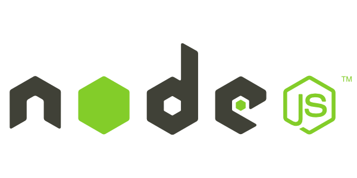

By
Manasa K
160712733004
Methodist College of Engg. & Tech.
What is Node.js ?
Node.js is an runtime environment for server-side and networking applications.
More ...
- Used for real-time web applications
- Uses Google V8 JavaScript engine to execute code.
- Contains a built-in library to allow applications to act as a Web server without software such as Apache HTTP Server Or Nginx.
History ...
-
Problem: The browser did not know how much of the file had been uploaded
and had to query the Web server.
- Ryan Dahl invented Node.js in 2009 at Joyent.
Applications ...
-
Node.js allows the creation of web servers and networking tools, using JavaScript.
-
Node.js brings event-driven programming to web servers, enabling development of fast web servers in JavaScript.
-
Most widely used Node.js frameworks are Express.js, Socket.IO and Connect.
Pros ...
- Uses JavaScript, which is easy to learn.
- Share the same piece of code with both server and client side.
- Fast processing.
- Active and vibrant community, with lots of code shared via github, etc.
Cons ...
- Dealing with relational database is a pain if you are using Node.
- Without diving in depth of JavaScript if someone starts Node, he may face conceptual problem.
- Node.js is not suited for CPU-intensive tasks. It is suited for I/O stuff only (like web servers).
Popularity ...
Node.js is gaining adoption as a server-side platform and is used by IBM, Microsoft, Yahoo, Walmart, Groupon, SAP, LinkedIn, PayPal and GoDaddy.